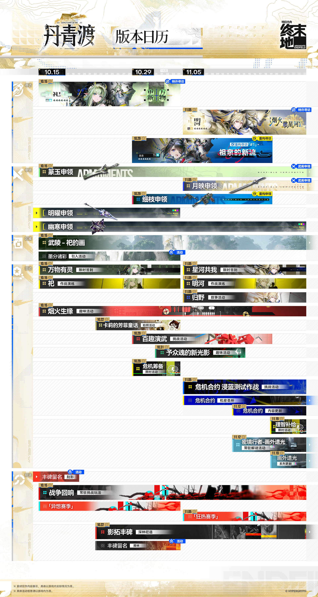
R01 · 丹青渡版本日历
信息说明 · 2026年10月12日 18:00
1920 × 3601
官号原帖 · CDN 原图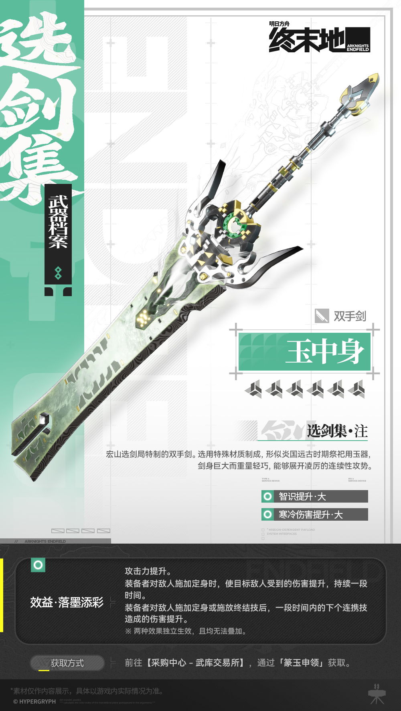
R02 · 武器档案玉中身
信息说明 · 2026年10月12日 17:00
1000 × 1767
官号原帖 · CDN 原图R03 · 墨分诸彩活动
活动公告 · 2026年10月12日 13:00
1600 × 900
官号原帖 · CDN 原图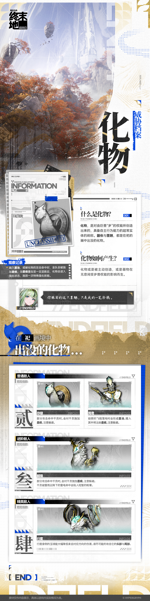
R04 · 威胁档案化物
信息说明 · 2026年10月12日 12:00
1000 × 3990
官号原帖 · CDN 原图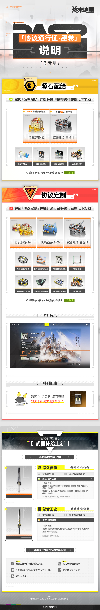
R05 · 协议通行证墨卷
信息说明 · 2026年10月11日 18:00
1000 × 6091
官号原帖 · CDN 原图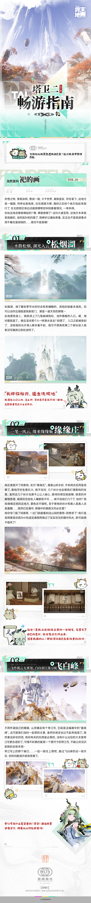
R06 · 祀的画畅游指南
信息说明 · 2026年10月11日 11:02
1000 × 9890
官号原帖 · CDN 原图R07 · 丹青渡版本内容 / 1
版本宣传 · 2026年10月10日 18:00
1000 × 12958
官号原帖 · CDN 原图R08 · 丹青渡版本内容 / 2
版本宣传 · 2026年10月10日 18:00
1000 × 11239
官号原帖 · CDN 原图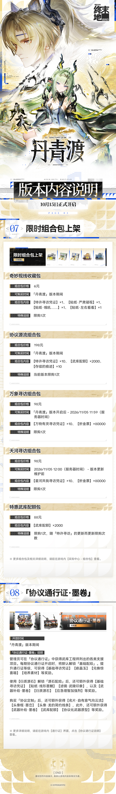
R09 · 丹青渡版本内容 / 3
版本宣传 · 2026年10月10日 18:00
1000 × 6825
官号原帖 · CDN 原图R10 · 云终末地上线
信息说明 · 2026年10月10日 12:00
1920 × 1105
官号原帖 · CDN 原图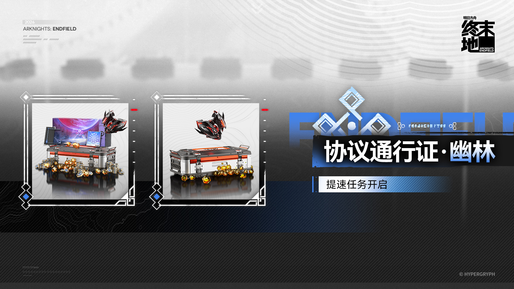
R11 · 通行证提速任务
活动公告 · 2026年10月08日 11:00
1600 × 900
官号原帖 · CDN 原图R12 · 天地墨显签到
活动公告 · 2026年10月07日 12:00
1600 × 900
官号原帖 · CDN 原图R13 · 理智补给
活动公告 · 2026年10月07日 11:30
1600 × 900
官号原帖 · CDN 原图R14 · 祀干员演示 / 1
角色介绍 · 2026年10月07日 11:02
1080 × 1920
官号原帖 · CDN 原图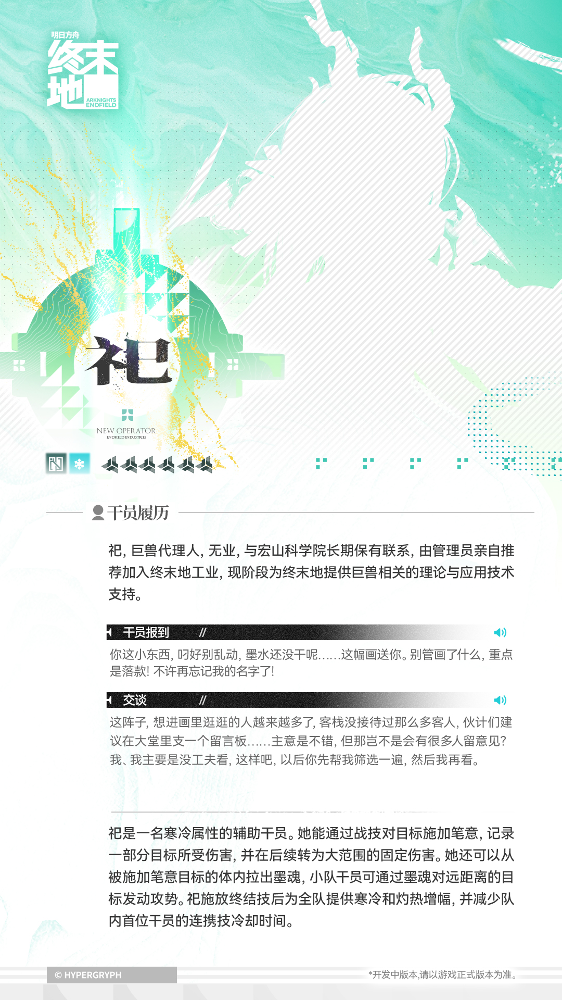
R15 · 祀干员演示 / 2
角色介绍 · 2026年10月07日 11:02
1080 × 1920
官号原帖 · CDN 原图R16 · 祀干员演示 / 3
角色介绍 · 2026年10月07日 11:02
1920 × 1080
官号原帖 · CDN 原图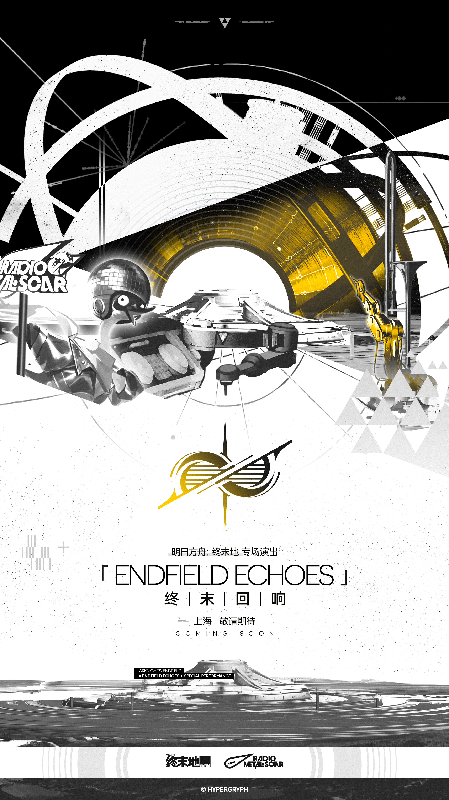
R17 · 终末回响现场演出
活动公告 · 2026年10月06日 20:45
2160 × 3840
官号原帖 · CDN 原图R18 · 丹青渡版本PV
版本宣传 · 2026年10月06日 19:41
1920 × 1080
官号原帖 · CDN 原图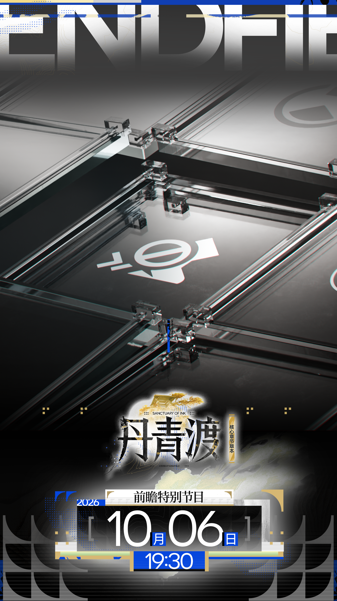
R19 · 火种未熄预告
版本宣传 · 2026年10月05日 12:00
2160 × 3840
官号原帖 · CDN 原图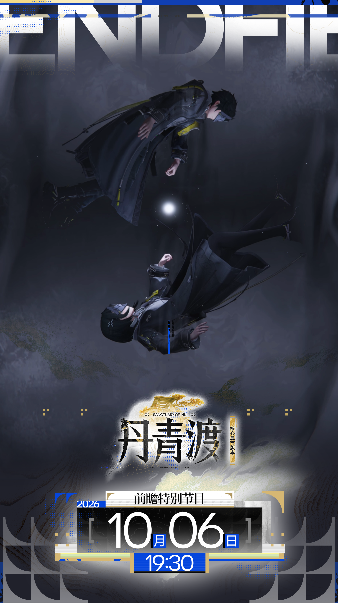
R20 · 未被定义的可能预告
版本宣传 · 2026年10月04日 12:00
2160 × 3840
官号原帖 · CDN 原图R21 · 熔火灼痕寻访
活动公告 · 2026年01月21日 12:30
1920 × 1080
官号原帖 · CDN 原图R22 · 零号委托版本内容
版本宣传 · 编辑于 2026年01月19日 15:55
1000 × 6095
官号原帖 · CDN 原图R23 · 零号委托版本日历
版本宣传 · 编辑于 2026年01月20日 18:46
1920 × 1080
官号原帖 · CDN 原图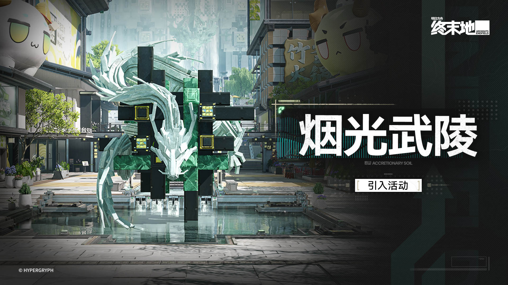
R24 · 烟光武陵活动
活动公告 · 2026年02月06日 14:00
1920 × 1080
官号原帖 · CDN 原图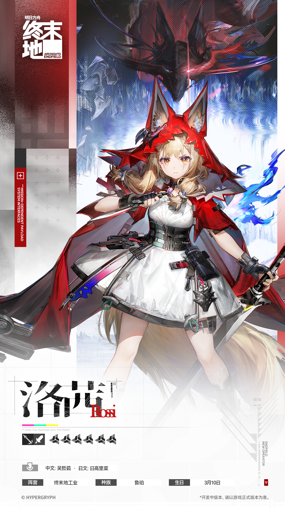
R25 · 洛茜干员演示 / 1
角色介绍 · 2026年03月26日 11:00
1080 × 1920
官号原帖 · CDN 原图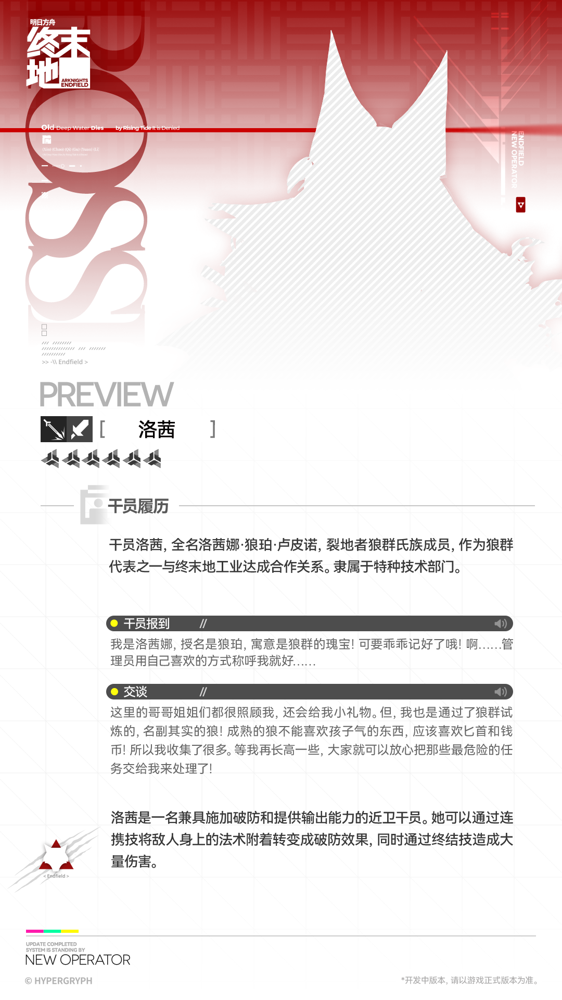
R26 · 洛茜干员演示 / 2
角色介绍 · 2026年03月26日 11:00
1080 × 1920
官号原帖 · CDN 原图R27 · 洛茜干员演示 / 3
角色介绍 · 2026年03月26日 11:00
3840 × 2160
官号原帖 · CDN 原图R28 · 新潮起故渊离研发通讯封面
信息说明 · 2026年03月02日 18:00
1920 × 1080
官号原帖 · CDN 原图R29 · 春晓时研发通讯封面
信息说明 · 编辑于 2026年04月13日 12:22
1920 × 1080
官号原帖 · CDN 原图R30 · 共贺庆典此时庆会
活动公告 · 2026年05月14日 12:00
1600 × 900
官号原帖 · CDN 原图R31 · 寻遗散记研发通讯封面
信息说明 · 2026年05月23日 12:00
1920 × 1080
官号原帖 · CDN 原图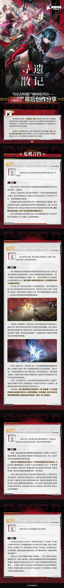
R32 · 寻遗散记幕后创作访谈 / 1
信息说明 · 2026年06月27日 18:00
1000 × 9031
官号原帖 · CDN 原图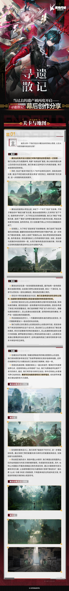
R33 · 寻遗散记幕后创作访谈 / 2
信息说明 · 2026年06月27日 18:00
1000 × 8499
官号原帖 · CDN 原图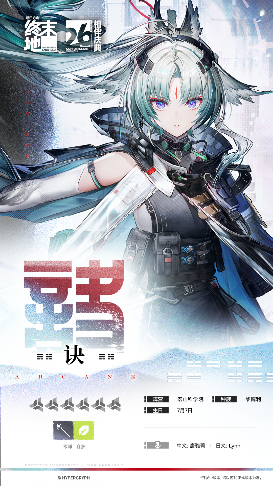
R34 · 诀干员演示 / 1
角色介绍 · 编辑于 2026年07月13日 20:06
1080 × 1920
官号原帖 · CDN 原图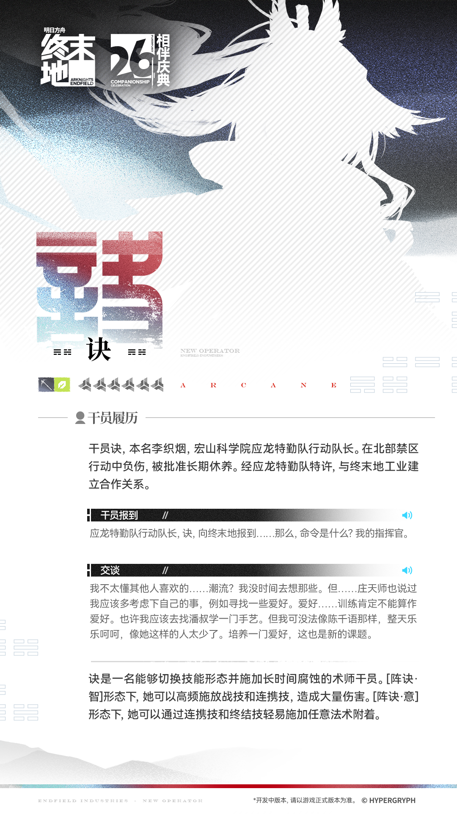
R35 · 诀干员演示 / 2
角色介绍 · 编辑于 2026年07月13日 20:06
1080 × 1920
官号原帖 · CDN 原图R36 · 提弗洛斯干员演示 / 1
角色介绍 · 2026年08月22日 11:01
1080 × 1920
官号原帖 · CDN 原图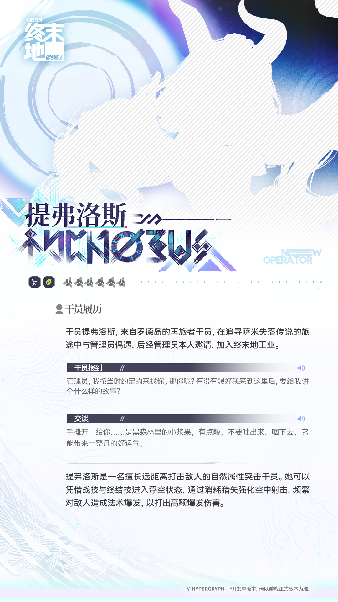
R37 · 提弗洛斯干员演示 / 2
角色介绍 · 2026年08月22日 11:01
1080 × 1920
官号原帖 · CDN 原图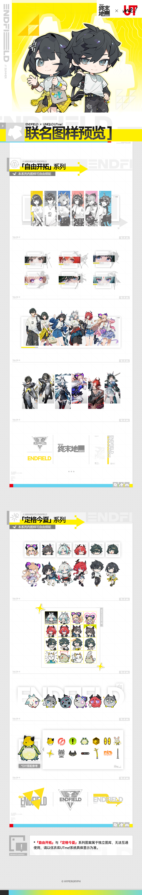
R38 · 优衣库UTme合作
活动公告 · 编辑于 2026年08月28日 11:34
1000 × 6260
官号原帖 · CDN 原图R39 · 奈雪联名预告
活动公告 · 2026年09月11日 14:00
900 × 1200
官号原帖 · CDN 原图R40 · 奈雪联名情报
信息说明 · 2026年09月19日 14:00
1000 × 9262
官号原帖 · CDN 原图